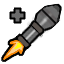

Classes
There are 9 classes in TF2, as well as many types of competitive
gamemodes. Certain team compositions are known as
the 'meta' for that gamemode. It is not set in stone, it is simply a recommendation for what the community has
found to be the most effective and rewarding.
All information found on this page is not hard fact, but instead mostly recommendation. Be aware there are varying
opinions in the community and these are just some of the most common.
This page uses common competitive vocabulary and slang. Certain words will be within single-quotes (e.g. 'word'). You can hover over these for a small tooltip definition.
Scout
Gamemodes: 4v4, 6v6, Prolander (7v7), and Highlander (9v9)
Scout is, without a doubt, the most versatile
class of competitive TF2. He is fast, does great close-mid range damage, and can manipulate his movements quickly
both on
the ground and in the air. A Scout an absolute necessity to any team in order to deny 'bombs' Soldiers, quickly
capture points, guide Medics to safety, finish off injured opponents, and wreak absolute havoc on the enemy.
Comp.TF Page
Soldier
Gamemodes: Ultiduo, 4v4, 6v6, Prolander (7v7), and Highlander (9v9)
Competitively, Soldier is very movement oriented.
Due to his ability to rocket jump, he can roll out quickly and gain higher ground much easier than other classes.
With this higher ground, he can use his splash damage to control choke points, block off areas from enemies, and deal more damage.
 Pocket Soldier (6v6 only)
The primary role of the Pocket Soldier is to protect his team's Medic
and to use his overheal (from the Medic)
to deal
damage, get kills and lead the team. The Pocket Soldier, Medic,
and Demoman form what is known as the 'combo'.
Usually the Pocket Soldier player is the team's 'main-caller'
 Roamer Soldier (6v6 only)
Roamer Soldier (6v6 only)
The Roamer Soldier's job is to protect his team's flank paths (with the help of a Scout) and to open up flank
paths in the enemy's defense. It is not uncommon for the Roamer Soldier to 'bomb' or to
'sac' for important classes like Demoman and Medic. Especially if the Medic has his Übercharge, it's best
to 'force' or 'drop' him to stop the enemy team
from pushing into an objective or choke.
Comp.TF Page
Pyro
Gamemodes: Prolander (7v7)* and Highlander (9v9)
Generally, Pyro is a support class.
The Pyro's main job is to protect the Medic. The Pyro also
has the job of neutralizing enemy Übers and pushes by
utilizing their airblast. The Pyro can also play a similar role as the Roaming Soldier, in which they will watch
their flank and open up paths behind the enemy team for theirs to push in.
Comp.TF Page
*This gamemode's meta is new and adaptive, as such, this class may not always be used.
Demoman
Gamemodes: 4v4, 6v6, Prolander (7v7) and Highlander (9v9)
The Demoman has the highest damage output of
all meta classes throughout the competitive gamemodes. As such, he is consistently played and is one of the most
important classes in a game, rivaling the Medic for the
most vital class. Using his Stickybombs, he can
effectively
shut down a choke or an objective until killed. He generally stays with the 'combo' to ensure his survival.
Comp.TF Page
Heavy
Gamemodes: Prolander (7v7)* and Highlander (9v9)
When he is used, the Heavy is usually the main force for
pushing an enemy point. Due to his high health, he is like a slow moving wall towards an enemy. Without a Medic,
however, he is often easily killed, as his slow speed limits him from playing away from his team.
Comp.TF Page
*This gamemode's meta is new and adaptive, as such, this class may not always be used.
Engineer
Gamemodes: Prolander (7v7)* and Highlander (9v9)
The Engineer is most often played as a defense class due
to how his Sentry Gun and Dispenser keep him anchored in place. He is also often used on Payload to push the cart
as he has the least impact when on the offense.
Comp.TF Page
*This gamemode's meta is new and adaptive, as such, this class may not always be used.
Medic
Gamemodes: Ultiduo, 4v4, 6v6, Prolander (7v7), and Highlander (9v9)
The Medic is used always in any
gamemode. His ability to use his Übercharge or Kritzkreig allows for his team to push much easier. Having a Medic
is also vital for your Soldiers' and Demoman's rollouts. Without a Medic, those classes couldn't get to the
objective quick enough to have an impact. Because of how important the Übercharge is for the team, it is
necessary to keep the Medic alive and well-protected (usually through a 'combo' with a Pocket Soldier and a
Demoman).
Comp.TF Page
Sniper
Gamemodes: Prolander (7v7)* and Highlander (9v9)
The Sniper's most common role is staying back and killing priority targets. Usually when he can get a 'pick' on an enemy Medic, Demoman, or the other Sniper, it allows your team to push in safely and fully. Snipers will often need to watch out for eachother as they are their biggest threats.
Comp.TF Page
*This gamemode's meta is new and adaptive, as such, this class may not always be used.
Spy
Gamemodes: Prolander (7v7)* and Highlander (9v9)
The Spy is often played with two roles: gaining information on the enemy team and picking off important targets. As Spy, you would want to stay behind the enemy team and try and wait for a good stab. If an enemy is aware that you're nearby, they will alert their team and they will be watching for you. Staying hidden, making callouts, and getting 'picks' before a push will help your team drastically.
Comp.TF Page